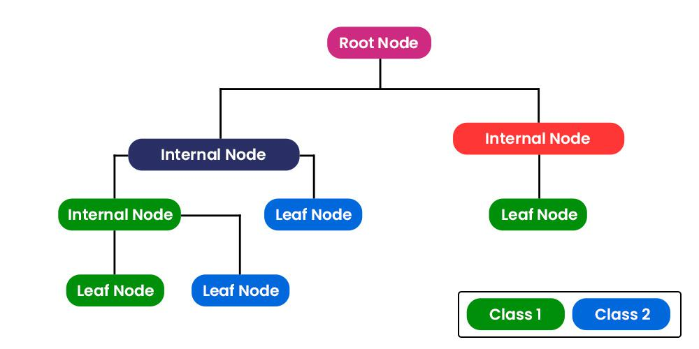

6 Classification I
6.1 Summary
This week has focussed on the application and classification of remotely sensed data, specifically looking into urban expansion, air pollution, land use and land cover (LULC) changes, urban green spaces, forest monitoring, and fire detection.
It incorporates the use of various sensors like Landsat, Sentinel-3, and Sentinel-5, along with different methodologies including regression analysis, hex grids (honeycombing), and statistical comparisons.
6.1.1 Urban Expansion and Air Pollution
The impact of LULC changes on air pollution is examined through major air pollutants (MAP) and land surface temperature (LST) using sensors and regression analysis. The case study used highlights the LULC distribution’s significant effect on MAP and LST in Iran, relying on data from the National Cartographic Center.
6.1.2 Urban Green Spaces
Different techniques and sensors are used to study urban green spaces, indicating a mix of methodologies like hybrid methods, object-based image analysis, and various mapping purposes. The importance of accurate mapping and classification of urban green areas is emphasized through inventory and assessment, ecosystem services, and species mapping.
6.1.3 Monitoring Forests and Illegal Logging
Challenges in monitoring illegal logging in Brazil’s Amapá are discussed, including limited resources and the utilization of tools like Global Forest Watch and Landsat for identifying deforestation areas. Also, forest loss monitoring techniques, such as pre-processing Landsat images and creating metrics for classification and analysis.
6.1.4 Machine Learning and Classification Techniques
An exploration of expert systems, machine learning principles, and the role of inductive learning in environmental data analysis. Detailed discussion on classification and regression trees (CART), including the concept of Gini impurity, decision trees, and random forests for handling complex environmental datasets. Introduction to image classification techniques, both supervised and unsupervised, including maximum likelihood classification and support vector machines (SVM), highlighting their applications in remote sensing data classification.
6.1.4.1 CART

What? A predictive model that represents a decision process for classification or regression. It’s used to categorise or predict the value of a target variable based on input variables (such as different spectral bands).
How? It creates a tree-like structure where each node represents a decision rule on an input variable, and each branch represents the outcome of that decision leading to different predictions or classifications.
6.1.5 Gini Impurity
What? A measure used in CART to determine how often a randomly chosen element from the set would be incorrectly labeled if it was randomly labeled according to the distribution of labels in the subset.
How? It measures the frequency at which any element of the dataset will be misclassified when it is randomly labeled. A Gini Impurity of 0 means all elements belong to a single class, indicating perfect purity.
6.1.6 Regression Trees
What? A type of decision tree designed for continuous data. While classification trees are used to predict categorical outcomes, regression trees predict numeric outcomes (such as the amount of rainfall).
How? It splits the data into branches to minimize the variance of responses within the branches, aiming to create groups that are as homogenous as possible in terms of the continuous response variable.
6.1.7 Random Forests
What? An ensemble learning method that operates by constructing a multitude of decision trees at training time and outputting the class that is the mode of the classes (classification) or mean prediction (regression) of the individual trees.
How? It improves the predictive accuracy and controls over-fitting by averaging or combining the results of individual decision trees, which reduces the variance and bias of the model.
6.1.8 Unsupervised Machine Learning (K-Means)
What? An unsupervised learning algorithm that groups unlabeled datasets into different clusters. K-means clustering is a method to automatically partition the data into K groups.
How? It identifies K centroids, and then allocates every data point to the nearest cluster, while keeping the centroids as small as possible.
6.1.9 ISODATA (Iterative Self-Organizing Data Analysis Technique)
What? A more advanced version of K-means that allows the number of clusters to be automatically adjusted during the iteration process.
How? It starts with an initial set of clusters and iteratively refines them by splitting, merging, or removing clusters based on the variability of the data and the distance between clusters.
6.1.10 Supervised Learning (Parametric and Non-Parametric)
What? Supervised learning involves training a model on a labeled dataset, which means the model learns from data that already contains the answers.
Parametric methods assume a predefined form for the function that maps inputs to outputs (e.g., linear regression).
Non-Parametric methods do not assume any specific form for the mapping function, allowing the data to determine the model structure (e.g., k-nearest neighbors).
6.1.11 SVM (Support Vector Machines)
What? A classification method that works by finding the hyperplane that best separates different classes in the feature space.
How? It looks for the hyperplane with the maximum margin, meaning the greatest distance between data points of both classes. It can handle linear and non-linear data thanks to the use of kernel functions that implicitly map input features into high-dimensional spaces.
6.2 Application
6.2.1 Random Forests in Land Cover Classification
The use of Random Forests (RF) for land cover classification means that more accurate maps of land use and cover can be developed, allowing policymakers to better assess the status of natural habitats, plan conservation areas, and monitor changes over time, as well as many other uses related to urban planning, economic and environmental development, etc. Its application has supported biodiversity conservation policies by identifying critical habitats and tracking the effectiveness of conservation measures.
Rodriguez-Galiano et al (2012) explore the effectiveness of the RF classifier for land cover classification in a notably complex area, using multi-temporal Landsat-5 Thematic Mapper data and variables from a DEM. The study area focused on the Province of Granada in the south of Spain, which is characterised by a diverse range of land cover types. Random Forests is shown to provide a high classification accuracy, the ability to handle large datasets with noise, and its flexibility across different types of data analysis without requiring assumptions about data distribution.
Some key findings from the study include:
The RF classifier achieved a high level of mapping accuracy for land cover classification, reaching an overall accuracy of 92% and a Kappa index of 0.92 (indicating excellent agreement beyond chance).
RF’s robustness was notable against reductions in training data size and the addition of noise. Significant decreases in accuracy were observed only when training data was reduced by more than 50% and noise was added above 20%.
It was identified that texture and geostatistical measures (such as madograms, rodograms, direct variograms, cross- and pseudo-cross variograms), alongside multi-seasonal spectral information, are the most important variables for classification, which had aligned with prior expectations. This helps in understanding the factors influencing land cover types.
Compared to a single decision tree, RF demonstrated superior performance, validated by a McNemar test with a significance level of 0.00001, suggesting that RF is a more reliable method for land cover classification in complex areas.
The study underscores the value of RF as an ML technique for land cover monitoring, particularly in large, heterogeneous landscapes. Its ability to maintain high accuracy despite data challenges and its non-parametric nature make it a powerful tool for remote sensing applications. This work not only validates the efficacy of RF in classifying complex land cover types but also encourages its broader adoption in the remote sensing community for large-scale environmental monitoring and analysis.
6.3 Reflection
These are clearly rather powerful methods. Some, such as SVM and RF seem to be more so than others, though it is difficult to precisely tell at this stage - I hope that as I ustilise them further, I will gain a greater appreciation for their specific use cases and the differences between exactly what their outputs are telling me (without having to scramble around on Google!).
This is my first time properly engaging with ML techniques and I have heard much about issues with biases in training data - the data you feed the algorithm is the data it then uses to conduct analysis from which insights are derived. Upon seeing its use in RS, I am reminded of this issue - if we trained a model solely on data from the Saraha Desert and then tried to apply it to the Amazon Rainforest, you would probably see very ‘wild’ outputs. This is probably a slight exaggeration of what most people would think to do, but it explains the issue well. I was recently in Denmark at the Lousiana Museum of Modern Art where an installation called From ‘Apple’ to ‘Abomination’ by Trevor Paglen (see pictures at the bottom of the page). It demonstrated the vitality of training ML algorithms without bias.
For example, defining what an apple looks like is relatively simple, but how do we define what a ‘good’ or ‘bad’ person looks like?
This is highly relevant to RS where the question of how do we define what something like an urban settlement looks like? Is there one form? Are there many? If we assume that a settlement must have roads, what of smaller villages located in more rural areas (especially in lesser developed countries) where they may not have roads. A city in Niger looks very different to a city in Brazil, which looks very different from a city in the US. This is probably where methods, such as unsupervised ML techniques are most useful - applying these techniques to global dataset (due to the nature of satellite imagery which captures the whole Earth), much less human interaction and bias can be introduced to the model, maintaining its objectivity as well as can be done.